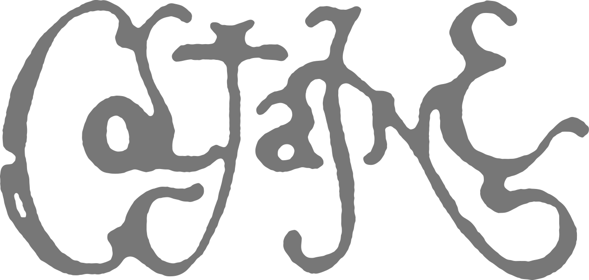

Following the haunting beauty of their debut Forgotten Ways,
Coltaine return with Brandung – a bold yet organic evolution
of their signature sound. Formed in 2022 in the mystic shadows
of Germany’s Black Forest, the band continues to dive deeper
into the fog-drenched realms of atmospheric psychedelia,
post-rock melancholy, and blackgaze intensity.
Coltaine's latest offering Brandung finds the German combo swimming in a
trance-like state across 9 sombre islands of sorrowful psychedelia.
The album showcases the band's taste for purely cinematic and "post"
atmospheres where droning acoustic guitars melt gradually into harder,
yet graceful electric sections. "Grace" is perhaps the most suitable
term to describe the overall sense of soft longing for the unattainable
as Julia's vocals paint their way through vast tapestries of sheer melancholia.
Brandung opens up its lips just like a clamshell, allowing the listener
in for a precious trip to the bottom of Coltaine's contemporary visions.
UPCOMING SHOWS
2025
November – Sonus ObscuraPAST SHOWS
2025
February – Beauty of Doom2024
Cloud Forest Tour2023
Forgotten Ways European Tour2022
Summer Death Anthems Tourbooking@coltaine-band.com